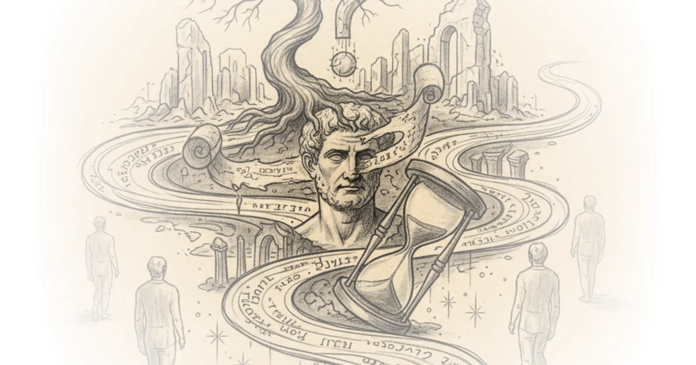

Forgotten Thinkers: Cicero Wes Cecil · Wes Cecil ·Oct 3, 2015 · 46 min read · Philosophy 
Norman Foster: Striving for Simplicity Louisiana Channel · The Louisiana Channel ·Jun 1, 2015 · 23 min read · Culture
Languages and Literatures: Cuneiform Civilizations Wes Cecil · Wes Cecil ·Oct 4, 2012 · 48 min read · Philosophy
Simone de Beauvoir Her Life and Philosophy Wes Cecil · Wes Cecil ·Sep 1, 2012 · 48 min read · Philosophy
Jean-Paul Sartre His Life and Philosophy Wes Cecil · Wes Cecil ·Sep 1, 2012 · 50 min read · Philosophy
Friedrich Nietzsche's Life and Philosophy Wes Cecil · Wes Cecil ·Aug 29, 2012 · 60 min read · Philosophy
Starlink, Logistics, and the Long Grind: Two Views of Russia's War on Ukraine Multiple sources: Sam Denby and 1 other · Wendover Productions
Tokyo's Two Crowning Crowds: The Scramble and the Station That Actually Wins Multiple sources: Jason Slaughter and 1 other · Not Just Bikes
The Supreme Court Strikes Down Emergency Tariffs — And the White House Doubles Down Multiple sources: Devin Stone and 1 other · LegalEagle